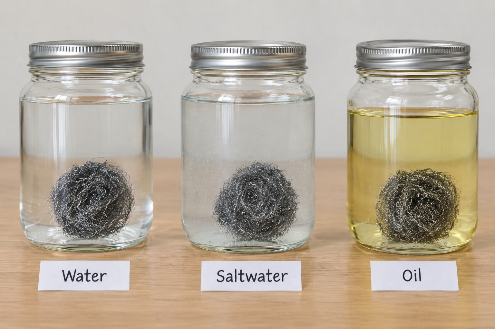
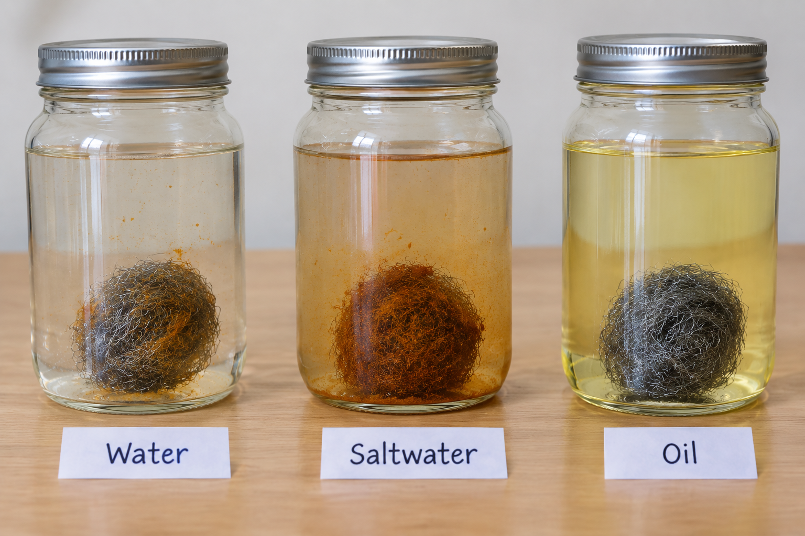

Observation A
Which reference fish best matches the underwater image?

Teacher tools
Jumping between activities changes navigation only. Reset student view clears every answer on this page.
Scientific drawings help scientists to record and communicate their observations. In this lesson, we will learn how to create a scientific drawing of a specimen.
📄
Download worksheet
Learning objective
We are learning how to create scientific drawings of specimens.
Success criteria
Think like a scientist
How to construct a scientific drawing to represent observations:
Expedition systems online
Move through each mission one stage at a time. CHECK confirms the current stage, RESET clears the current response, and NEXT advances only after the stage is complete.
Mission 01
Stage 1 of 2Did you know? We know more about the surface of Mars than we do about the deepest parts of our own ocean! Deep sea exploration is how scientists use submarines, robots and underwater cameras to explore the ocean floor.

The deep sea has tough conditions: it is extremely dark, cold and has many layers that challenge animals to survive.
The deep sea begins where sunlight can no longer reach underwater. This is generally around 200 metres deep.

When you have reviewed the briefing, press CHECK.
Mission 01
Stage 2 of 2Technology does not always work perfectly in the deep sea. Cameras can fail, footage can become corrupted, and the extreme pressure can damage equipment.

If a camera fails, scientists still need a way to preserve what they observed. Careful observations and scientific drawings can provide a visual record when photographs or video are unavailable.
Press CHECK when you understand why scientists need another way to record their observations.
Mission 02
Stage 1The submersible camera has been damaged! Inspect the camera closely and see if you can identify what is happening.
Click the camera to switch between the working camera and the damaged camera. Click it again to switch back.
Can you identify what is going on?

When you have inspected the camera, press CHECK to reveal the answer.
Mission 02
Stage 2 of 2You will be investigating what happens to metal when it reacts with different liquids.

This experiment uses iron wool to represent the metal of the deep-sea camera.
You will observe what happens to the iron in three different liquids over time.
Review the experiment set-up, then press CHECK.
Mission 02
Stage 3 of 3Your task: Identify each highlighted part of the experiment and select the scientific symbol that best represents it.

Step 1: Select the matching symbol.
Match all four parts of the experiment. When all four are complete, press CHECK.
Mission 02
Stage 4 of 4Your task: Draw a scientific diagram of this experiment.
Use the checklist you unlocked earlier to help you create your scientific diagram.
Remember to use the scientific symbols you identified in the previous stage.
When you have finished your scientific drawing, press CHECK.
Mission 02
Stage 5 of 5Compare the drawings below with the experiment. Select the option that best follows the rules of a scientific drawing.
Your task: Select the correct scientific drawing of this experiment.
Select one drawing, then press CHECK.
Mission 02
Stage 6 of 6Here are the results from the rust experiment after 24 hours.

Compare the iron wool in the three jars. Which liquid caused the most rust?
Which liquid appears to protect the iron from rusting?
Think about your conclusion, then press CHECK to reveal the answer.
Mission 03
Stage 1 of 3There are some rules to follow when making a scientific drawing. Review each rule and tick it off.
Tick all five rules, then press CHECK to complete the self-assessment.
Mission 03
Stage 2 of 4A photo of one piece of equipment from the experiment is shown below. Select the matching symbol. Match all three items to continue.
Mission 03
Stage 3 of 4The metal seems to have brown residue that is making the shutter stuck.
Let's investigate why this is happening.
Press CHECK when you are ready to move on to the next mission.
Mission 03
Stage 4 of 4Look at the experiment on the left. Drag the equipment symbols into the box on the right to build a scientific diagram of it.
Mission 04 · Activity 1
Activity 1 of 4Which reference fish best matches the underwater image?
Now use the same strategy on a second image. Ignore the species name and compare the visible structures.

Choose one reference for both observations, then press CHECK.
Mission 04 · Activity 2
Activity 2 of 4A scientific drawing should show the important observable structures clearly. It is not an artwork: colour, decorative shading and unnecessary detail can make the record harder to interpret.
Choose the best scientific drawing, then press CHECK.
Mission 04 · Activity 3
Activity 3 of 4Click the image to zoom in
The labels are provided for you this time. Follow each leader line from the fish to its end, then drag the correct label beside that line. This is guided practice before you label the next organism independently.

../images/lesson5/red-lipped-batfish-diagram.png.
Place all five labels beside the ends of the leader lines, then press CHECK.
Mission 04 · Activity 4
Activity 4 of 4Click the image to zoom in
This time there is no word bank. Follow each leader line from the frogfish to a blank field and type the scientific label yourself. Use visible structures from the drawing, then press CHECK when all six labels are complete.

../images/lesson5/frogfish-diagram.png.
Label all six structures in your own words. Press ENTER or click elsewhere to save each label, then press CHECK to compare your work with an example.
Mission 05
Final applicationSonar has detected movement near the expedition vehicle. Locate a contact, observe the organism, and create a scientific record if the camera system cannot capture it.
The sonar cannot identify what is moving through the water. Choose one contact to investigate.
Once a contact is acquired, that organism stays assigned to your expedition even if the page is refreshed or the mission is reset.
Matching sonar movement with the live observation feed.
Observe the organism carefully. Try to capture a photograph for the expedition record before it moves away.
The organism swam out of range before an image could be captured. Return to the sonar to find another animal.
Writing observation frame to the expedition record.
Draw the organism from observation. Use the Science Check panel to review the same scientific-drawing rules from Mission 3.
The computer is not judging your drawing. The checklist is your self-assessment before you complete the expedition.
Mission 05
Identify the speciesThis is the image the camera recorded. Click the animal you think matches it, then press CHECK.
Expedition complete
The camera failed, but your scientific drawing preserved an observation of the organism.
Field guide match